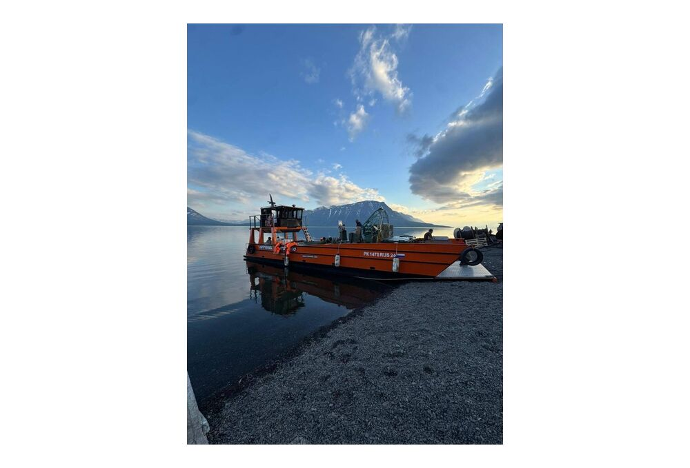
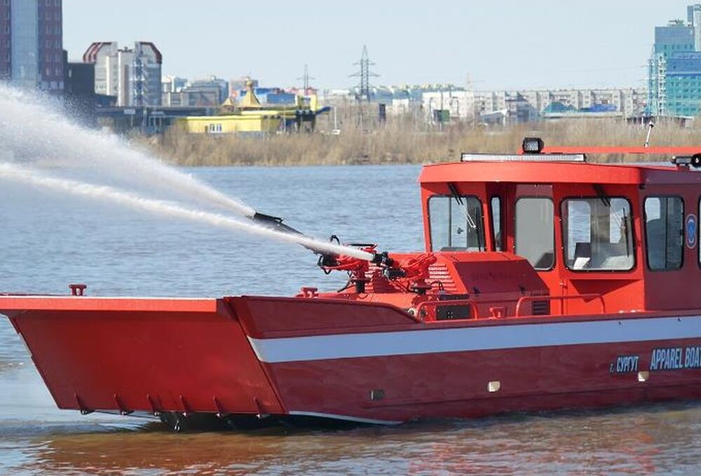
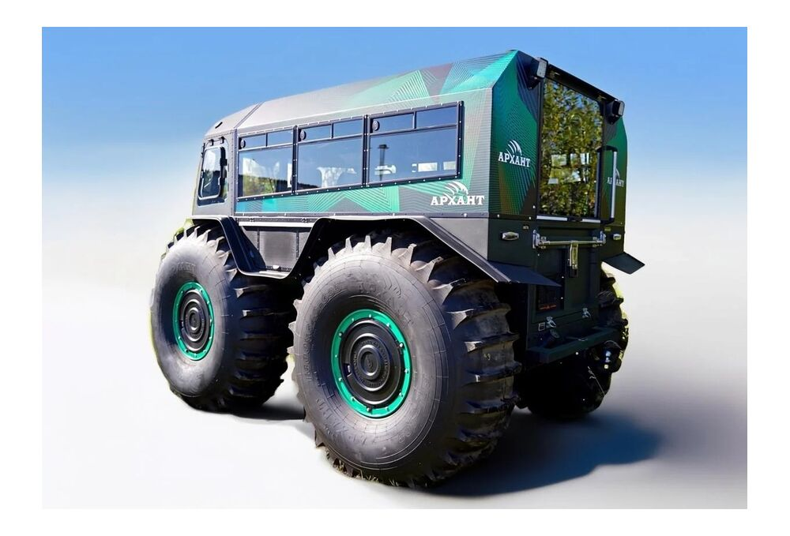
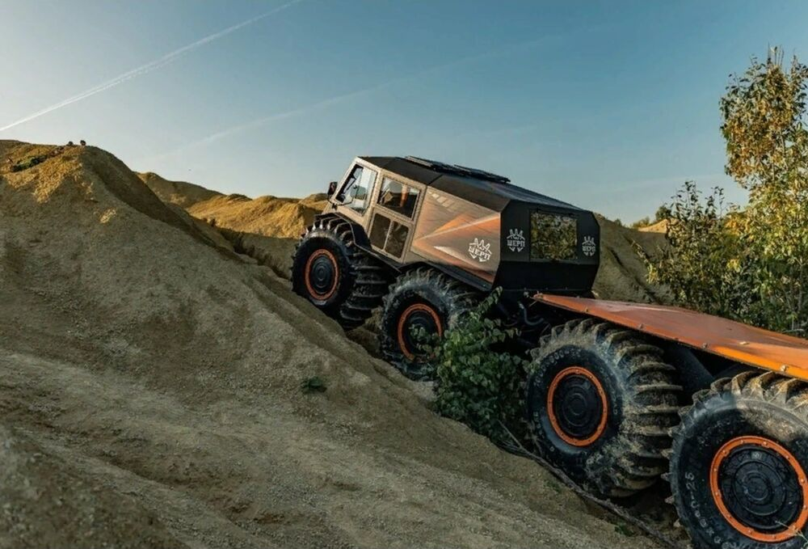

Поставка специализированного транспорта для перевозки персонала, грузов и оборудования к удаленным и труднодоступным объектам.




Алюминиевые аппарельные катера предназначены для работы на реках, озерах и прибрежных акваториях, включая высадку и погрузочно-разгрузочные операции на необорудованном берегу.
Плавающие снегоболотоходы обеспечивают передвижение по снегу, болотистой местности, слабонесущим грунтам и водным преградам.
Техника может применяться для снабжения промысловых объектов, перевозки ремонтных и аварийных бригад, спасательных работ и доставки специального оборудования.
Алюминиевые рабочие, грузопассажирские и транспортные катера для перевозки персонала, грузов и техники, снабжения удаленных объектов и работы с необорудованным берегом.
запрос по параметрамСпециализированные катера для аварийно-спасательных и пожарных работ, в том числе на промышленных и нефтегазовых объектах, а также для задач ЛАРН.
запрос по параметрамУниверсальные амфибийные вездеходы для перевозки людей, инструмента и грузов по бездорожью, снегу, болотам и водным преградам.
запрос по параметрамМногоосная вездеходная техника для перевозки крупных грузов, оборудования и больших групп персонала. Возможна установка пассажирских, грузовых, жилых и других специализированных модулей.
запрос по параметрамОпишите задачу и условия эксплуатации — вернёмся с ответом в течение 24 часов.
Опишите задачу, район работы и состав перевозок. Инженер подберёт технику и подготовит ответ.